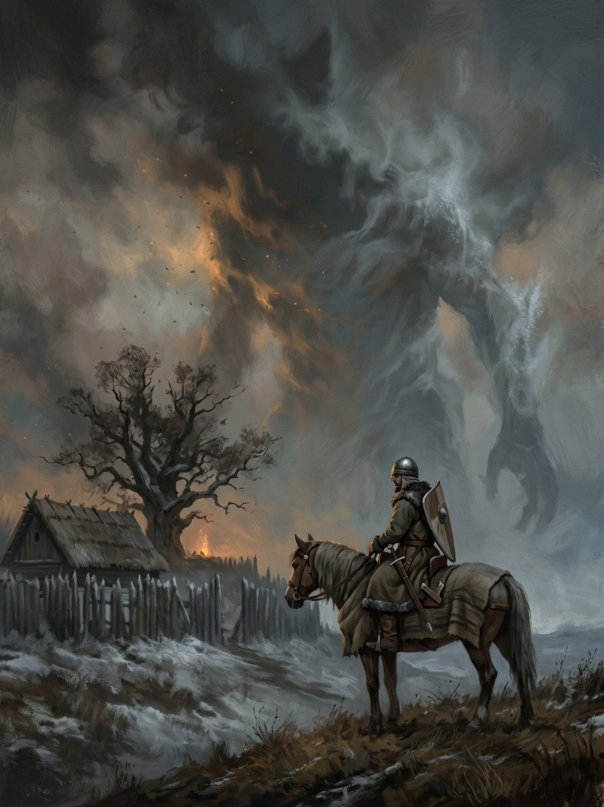

Stepių Alkis (Erdene-Chuluu)¶
Nature¶
Egregore (Cosmology §2.2): Stepių Alkis, steppe name Erdene-Chuluu (“jewel stone”, Mongolian). It is fed by conquest without end and the hubris of horizon-kings who think they can “conquer” the horizon. It is the Golden Horde’s shadow, and not Tengri or any real faith’s deity. Its season is Book II.
Stepių Alkis (Erdene-Chuluu)

Stepių Alkis (Erdene-Chuluu) · force¶
Type |
force |
Origin |
Egregore (fed by institutions) |
Note |
Erdene-Chuluu: primal predatory spirit of the eastern steppes and nomadic hosts. |
Wants¶
Dissolution: to break the walls of civilisation and turn the world back into unmapped grassland of blood and horse-hair. It wants a battlefield that is a literal “altar of dust”.
Takes (its price)¶
It lures with the vision of an endless empire. The price is the army, and then the king’s sense of limit: the catastrophic slaughter on the Vorskla and Edigu’s mass executions of prisoners are the harvest.
Signs & manifestations¶
Dust devils that walk beside the columns without wind; horse-hair crammed into wells that turn foul (Book II ch. 23); a grass that goes yellow overnight “and looks the way eyes look” (ch. 24); an old stone baba with no mouth facing east (ch. 23); heat in the armour like an oven (ch. 25); a red sky.
Vessels, servants, claims¶
Patron of Edigu, the emir, who keeps an old kamė, a shamaness who still speaks with the earth (Book II ch. 24). Fed by the Golden Horde and, unwittingly, by Vytautas, whose crusade against the Tatars is blessed by the Pope (ch. 20, “Stepių Alkis”) and who becomes “a crusader” as his price rises. Tokhtamysh is its broken guest.
Weaknesses¶
It cannot follow into forests or bogs, and the Root-Mother cannot follow into it (ch. 23). Its lures work only on those who already want an empire. Edigu wins by drawing a plan on the ground, wiping it out with his foot “to leave no traces” (ch. 24).
Arc across the books¶
II only. The Pope’s crusade against the Tatars raises Vytautas’s price (ch. 20). The march into the steppe, the dust devils, the red sky (ch. 23). Edigu and the kamė (ch. 24). The slaughter at the river, 12 August 1399 (ch. 25–26, Vorskla).
Relations
Antagonist of: II · The Golden Shadow — mythic, feeds
Fed by: Golden Horde
Patron of: Edigu
Nature Egregore (Layer II). The Golden Horde's shadow, steppe name Erdene-Chuluu, jewel-stone. Not a real faith's deity
Born of Conquest without end and the hubris of horizon-kings who think they can conquer the horizon
Vessels Patron of Edigu, who keeps a kamė that still speaks with the earth. Fed unwittingly by Vytautas's papal crusade against the Tatars. Tokhtamysh is its broken guest
Wants Dissolution: the walls of civilisation broken, the world turned back to unmapped grassland of blood and horse-hair; a battlefield that is an altar of dust
Takes The army, and then the king's sense of limit. The Vorskla slaughter and Edigu's mass executions are the harvest
Signs Dust devils that walk beside the columns without wind; horse-hair crammed into wells; grass that goes yellow overnight and looks the way eyes look; a stone baba with no mouth facing east; a red sky
Weaknesses It cannot follow into forests or bogs, and the Root-Mother cannot follow into it. Its lures work only on those who already want an empire
The lure. A vision of an endless empire. It works only on those who already want one.
Edigu. He wins by drawing a plan on the ground and wiping it out with his foot to leave no traces.
The open steppe. Strongest on open grassland, beyond forest and bog. Strongest of all at the Vorskla in August 1399.
Where it fails. Wherever there is a forest or a bog to stop it.
Book II. The Pope's crusade against the Tatars raises Vytautas's price (ch. 20); the march into the steppe, dust devils and red sky (ch. 23); Edigu and the kamė (ch. 24); the slaughter at the river, 12 Aug 1399 (ch. 25-26).
Connections¶
graph LR
book2["II · The Golden Shadow"]
edigu["Edigu"]
golden_horde["Golden Horde"]
steppe_hunger["Stepių Alkis (Erdene-Chuluu)"]
steppe_hunger -->|Fed by| golden_horde
steppe_hunger -->|Patron of| edigu
steppe_hunger -->|Antagonist of| book2
style steppe_hunger stroke-width:3px